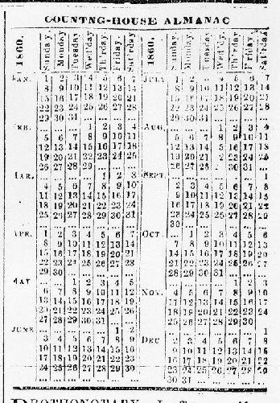

|
Columns 1-3 contained a seemingly random collection of news and "non-news" items, ranging on February 1, 1860 from "Facts and Fancies" in column 1 (see pages 1-2 for a description of this feature), to an appeal in column 2 from Frances Ellen Watkins, "a young colored girl," for Christians everywhere to join to fight slavery, to an excerpted editorial from the Hartford Telegraph in column 3 blasting Stephen Douglas for "bowing down to the Moloch of Slavery."
Columns 4-6 carried a combination of different types of information, ranging from additional ads for estate sales to those singing the praises of "female pills" to local marriage and death notices. A calendar for the current year also appeared on page 8, usually in the last column.

|